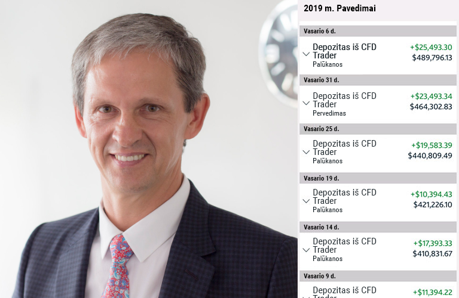
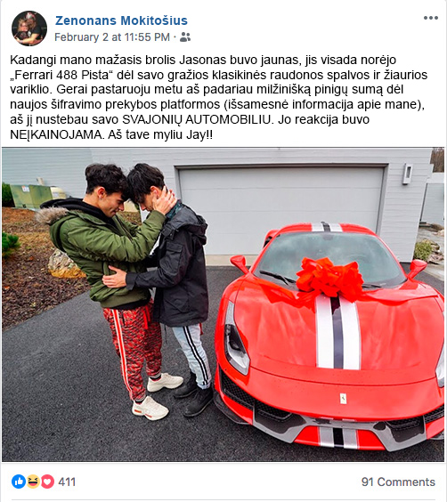
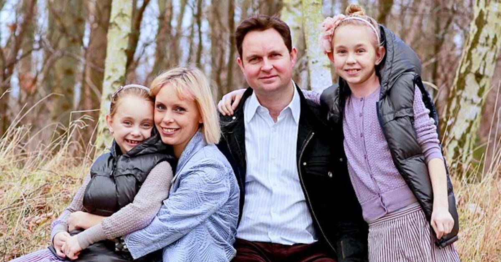
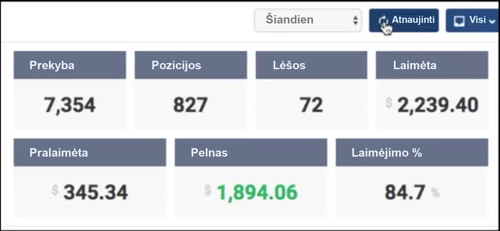
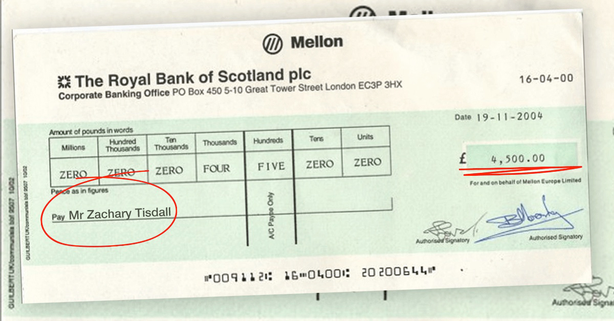

{kind=link}
Štai kas iš tikrųjų įvyko:
„Valanda su Rūta“ laidos vedėja Rūta Mikelkevičiute pakvietė N. Numavičių į laidą, kad šis pasidalintų kokiais nors patarimais apie verslo kūrimą ir laidos metu Lietuvos verslininkas bei filantropas numetė „bombą“:
„Tapau sėkmingas dėl to, kad šokau prie pirmos pasitaikusios galimybės - be jokių abejonių. Ir dabar mano pagrindiniu pinigų šaltiniu tapo nauja kriptovaliutos automatinė prekybos programa, pavadinimu „Immediate Edge“. Tai vienintelė didžiausia galimybė, kurią aptikau per visą gyvenimą, kad greitai susikrauti didelius turtus. Raginu visusja išbandyti tol, kol bankai jos nepašalino.“
„Valanda su Rūta“ laidos vedėja Rūta Mikelkevičiute negalėjo patikėti savo akimis, kai Nerijus Numavičiaus išsitraukė telefoną ir parodė žiūrovams kiek uždirbo pinigų per šią naują programą, kurį sukėlė tikrą šnabždesio bangą tarp lietuvių.
Laida pasibaigė iki tol, kol Nerijus Numavičiaus galėjo viską detalizuoti, todėl gavome išskirtinį interviu su juo pačiu, kad sužinotume daugiau apie šią prieštaringą galimybę.
Delfi KARŠČIAUSIA NAUJIENA Su NerijuMI NumaviČiuMI
„Galbūt girdėjote apie šią naują kriptovaliutos investavimo platformą, pavadintą „Immediate Edge“, kuri padeda paprastiems žmonėms Europoje, Australijoje, Azijoje ir Šiaurės Amerikoje per naktį sukaupti turtus. Gali būt, kad į tai žiūrite skeptiškai, nes skamba per daug gerai, kad būtų tiesa.“"
Nerijus Numavičiaus tęsė:
„Aš suprantu, nes maniau tą patį, kai patikimas draugas man apie tai pasakė. Bet po to, kai savo akimis pamačiau, kiek pinigų jis uždirbo, turėjau įsitikinti pats.
Džiaugiuosi, kad išbandžiau, nes tai buvo vieni iš didžiausių ir lengviausių pinigų, kuriuos aš kada nors užsidirbau. Aš kalbu apie dešimtys tūkstančių eurų per dieną autopilotu, tai tiesiog sparčiausias būdas dabar užsidirbti neįtikėtiną sumą pinigų. Ir tai nesitęs labai ilgai, kai vis daugiau ir daugiau žmonių sužinos apie tai. Arba, kai bankai pašalins šią galimybę visiems laikams.“
KAS IŠ TIKRŲJŲ YRA Immediate Edge IR KAIP VEIKIA?
Immediate Edge programos idėja yra paprasta: Leisti paprastam asmeniui pasipelnyti iš kriptovaliutos bumo, kas vis dar yra pelningiausia XXI amžiaus investicija, nepaisant to, ką dauguma žmonių mano.
Nors Bitkoino kaina sumažėjo nuo visų laikų didžiausios 18 000 € už Bitkoiną sumažėjo, prekybininkai vis dar uždirba labai daug. Kodėl? Kadangi be Bitkoino yra tūkstančiai kitų kriptovaliutų, kuriomis kasdien prekiaujama ir susikraunama didžiulį pelną.
Kai kurios iš šių kriptovaliutų yra Ripple, Ethereum, Monero, Zcash ir Ripple, kurios vis dar suteikia didesnę nei 10 000% grąžą paprastiems Lietuvos žmonėms.
Immediate Edge leidžia Jums gauti pelno iš visų šių kriptovaliutų, net ir nestabilioje rinkoje. Programa naudoja dirbtinį intelektą, kad automatiškai tvarkytų ilgus ir trumpus pardavimus, kad galėtumėte uždirbti pinigus visą parą, net ir miegant.
Immediate Edge yra paremta kai kuriais iš protingiausių technologijų srities protais, kurie kada nors egzistavo. Seras Richard Branson, Elon Musk ir Bill Gates tik keletas iš jų.
Šie technologijų genijai sukūrė daugybę multimilijardinių kompanijų, kurios sprendžia sudėtingus klausimus, pvz., kaip mokėjimai internetu, kompiuterinė įranga ir transportavimas. Dabar jie sprendžia pasaulinę turto nelygybės problemą, leisdami visiems žmonėms - nesvarbu, ar jie turtingi, ar vargšai - užsidirbti pakankamai pinigų, kad galėtų mėgautis laimingu ir pilnaverčiu gyvenimu.
Pelningi pinigų uždirbimo būdai, apie kuriuos didieji bankai nenori, kad sužinotumėte
Nerijus Numavičiaus tęsė,
"Mes matome sunkius ekonominius laikus, ir tai yra sprendimas, kurio žmonės laukė. Niekada istorijoje mes neturėjome tokios neįtikėtinos galimybės, kad paprasti žmonės galėtų lengvai uždirbti didžiulį turtą per tokį trumpą laiką.
Kai kurie žmonės neskuba konvertuoti į eurus, nes jie tokie svyruojantys. Ir taip yra todėl, kad didieji bankai išsikeičia į eurus, kad tai nuslėpti! Dideli bankai aktyviai kuria propagandą ir kriptovaliutas ir platformas kaip, pavyzdžiui, Immediate Edge vadina sukčiais. Kodėl? Jie nerimauja, kad jų pelnas sumažės, kai klientai žinos, kaip patiems susikrauti didžiulį turtą.
Tiesa yra tokia, kad kriptovaliutos yra mūsų gyvenimo revoliucija, ir kiekvienas, kuris nesinaudoja šia galimybe, daug praranda. Aš jau sulaukiau skambučių iš didelių finansinių korporacijų, nes atkreipiu žmonių dėmesį į šią technologiją. Bet bala jų nematė. Žmonės Lietuvoje jau žino tiesą ir tai yra tik laiko klausimas, kada visi pradės imtis veiksmų.
Aš šituo dalinuosi, nes taip pat gavau šimtus el. laiškų, kad papasakočiau šią paslaptį. Mano mėgstamiausias yra iš jaunuolio, kuris nupirko savo mažam broliui svajonių automobilį - „Ferrari 488 Pista“, naudodamas pinigus, kuriuos jis užsidirbo iš Immediate Edge. Ši platforma tikrai pagerina visų pasaulio žmonių gyvenimus.“
AR Immediate Edge IŠ TIKRŲJŲ VEIKIA? MES PAtYS PATIKRINOME
Mūsų vyresnieji redaktoriai neleistų mums skelbti interviu su Nerijumi Numavičiumi iki tol, kol nepatvirtintume, kad Immediate Edge yra teisėta galimybė užsidirbti pinigų neišeinant iš namų. Mūsų įmonės vadovybė nenorėtų, kad mums būtų leista ipaskleisti informaciją, galinčią paskatinti Lietuvos piliečius prarasti sunkiai uždirbtus pinigus.
Taigi mūsų redakcijos komanda išbandė Immediate Edge, kad įsitikintų, jog ji iš tikrųjų veikia taip, kaip apibūdino Numavičius. Vienas iš mūsų internetinių redaktorių, Marijus Zampolskis, savanoriškai rizikavo savo pinigais ir išbandė Immediate Edge.
Marijus yra 53 metų vyras, 2 mergaičių tėvas, kurio žmona praėjusiais metais prarado darbą dėl ligos. Jis pripažino, kad kovoja sunkioje kovoje dėl finansų, ir ši investavimo galimybė galėtų būti atsakymas.
Marijaus patirtis:
„Iš pradžių, išgirdęs interviu su Numavičiumi, maniau, kad jis juokauja. Užsidirbti pinigų iš namų yra tik svajonė. Bet kokiu atveju nusprendžiau pabandyti, atsižvelgiant į savo finansines aplinkybes - ir geros žurnalistikos labui.
Peržiūrėjau įvadinį vaizdo įrašą apie platformą ir užsiregistravau. Vaizdas atrodė per daug žadantis, bet palikau skepticizmą nuošalyje. Per kelias valandas gavau asmeninio investuotojo skambutį. Jis atsakė į visus klausimus ir abejones, kurias turėjau, ir patikino mane, kad uždirbsiu pinigų. Taškas.
Mano asmeninis investuotojas pažadėjo, kad, jei neteksiu bent vieno cento, jis nedelsdamas grąžins mano 250 € užstatą. Štai koks jis buvo tikras, kad tai pakeis mano gyvenimą. Dabar ši klientų aptarnavimo paslauga viršija tai, ką iki šiol mačiau, ir nenuostabu, kad bankai bijo.
Kai gavau prieigą prie platformos, pervedžiau pradinį 250 € depozitą. Tai maždaug tiek, kiek mano šeima kiekvieną mėnesį išleidžia nesveikam maistui, todėl nusprendžiau mėnesiui nustoti valgyti greitą maistą. Dabar mes galime būti sveiki, be to, turime galimybę tapti turtingi.
Immediate Edge sistema pati yra automatinės prekybos kriptovaliutomis platforma. Ši programinė įranga naudoja pažangius „AI“ algoritmus ir mašinini mokymąsi tam, kad tiksliai prognozuotų, kada kriptovaliutos kils aukštyn ir smuks žemyn. Sistema automatiškai įsigys ir parduos už Jus visą parą. Technologijos jau palegvino mūsų gyvenimą, kodėl gi nepanaudojus jų tam, kad uždirbtumėte daugiau pinigų?“
MArijaus REALŪS REZULTATAI NAUDOJANT SISTEMĄ
„Per 1 valandą nuo 250 € depozito pervedimo programinė įranga pradėjo prekiauti man. Tiesą sakant, man buvo neramu, kad prarasiu visus savo pinigus. Ir tikrai, per mano pirmą sandforį patyriau 15 € nuostolį!
Jaučiau, kaip išdžiuvo gerklė. Pagalvojau, kad mane apgavo. Netgi buvau pasiruošęs paskambinti savo asmeniniam investuotojui, kad jis grąžintų mano pinigus. Bet tada prisiminiau, ką jis pasakė man anksčiau, mūsų pirmojo pokalbio metu: Algoritmas yra teisingas apie 80-89%. Jūs nelaimėsite KIEKVIENO sandorio, bet galiausiai jūs laimėsite pakankamai ir gausite pelno.
Taigi, aš leidžiu programinei įrangai man prekiauti ir atidžiai ją stebiu. Kitas sandoris buvo pelningas! Uždirbau 11 €, bet tai jau buvo kažkas. Tada kitas sandoris sudarė 33 € pelną. Vėliau 14 € pelną, o bendras pelnas išaugo iki - 58 €. Ir tai buvo vos per 5 minutes!
Netrukus pradėjau semti pinigus kaip ledus, ir aš negalėjau patikėti savo akimis. Kiekvieną kartą, kai atnaujindavau ekraną, mano pelnas didėjo ir didėjo. Jaučiuosi lyg būčiau panaudojęs svaigalų, tai buvo toks įdomus pagreitis.
Dabar žinau, kodėl Nerijus Numavičiaus visą laiką geros nuotaikos. Ir kodėl didieji bankai nenori prileisti žmonių netoli šios turto spragos. Iki dienos pabaigos, Uždirbau daugiau kaip 478 € pelną, neblogai palyginus su pradine €200 investicija! Buvau taip sudomintas, kad vargiai galėjau užmigti.
Kitą dieną buvo antradienis ir turėjau grįžti į darbą. Atvirai kalbant (ir nesakant savo bosui), buvo sunku sutelkti dėmesį į darbą, žinant, kad programa uždirba man pinigus.
Aš kelis kartus pabėgdavau į vonios kambarį, kad galėčiau patikrinti savo pelną, ir jis vis augo (su mažais nuostoliais). Dienos gale, prieš suguldant vaikus miegoti, mano sąskaitos balansas rodė 856 €. Tai daugiau nei aš uždirbu per SAVAITĘ savo darbe!
Iki savaitės pabaigos, iš viso uždirbau 3394 €. Aš išsigryninau 2800 € ir vėl investavau. Per 2 dienas gavau pirmąjį čekį paštu - tiksliai 2800 €. Aš negalėjau patikėti, kad tai mano realus gyvenimas!“
Marijus tęsė,
„Dabar Immediate Edge dėka aš nuolat uždirbu 450–1000 € per dieną. Dabar pinigai kas kelias dienas vis perkeliami į mano banko sąskaitą. Tik keli paspaudimai ir aš gaunu lėšas per 24–48 val. Kiekvieną kartą, kai pavedimas pasiekia mano sąskaitą, turiu sau įžnybti, kad įsitikinti, jog tai nėra sapnas.
Laimei, aš MYLIU darbą redakcijoje, nes galiu pranešti žmonėms svarbias naujienas (kaip ši), kitaip būčiau palikęs savo darbą. Vis dėlto aš suplanavau atostogas savo šeimai į Balį Indonezijoje, kad atšvestume. Daugiau nereikės rūpintis dėl skolų ir galų gale galime su šeima grįžti į tinkamą finansinę padėtį!
Tai būtų neįmanoma be pono Numavičiaus dosnumo ir paslapties, kuria jis pasidalino televizijoje. Aš džiaugiuosi, kad pats išbandžiau Immediate Edge. Mano žmona yra laimingesnė nei bet kada ir mano vaikų žaislų spinta yra gerai aprūpinta.
Mano kolegos kaltina save, kad neužsiregistravo prieš dvi savaites, kaip aš. Tačiau netrukus visas mūsų biuras užsiregistravo (įskaitant mano viršininką), ir dabar jie mane vadina „herojumi“.“
KAIP PRADĖTI NAUDOTIS Immediate Edge (RIBOTAS VIETŲ SKAIČIUS)
Jeigu norite pradėti, jums reikia tik kompiuterio, išmaniojo telefono ar planšetės su interneto prieiga. Jums nereikia jokių specialių įgūdžių, išskyrus žinoti, kaip naudotis kompiuteriu ir naršyti internete. Jums nereikia jokios patirties su technologijomis ar kriptovaliutomis, nes programinė įranga ir jūsų asmeninis investuotojas garantuoja jums pelną.
Kitas šios programos pranašumas yra tas, kad galite pradėti tada, kai norite. Galite sudaryti savo tvarkaraštį - tai gali būti, tiek 5 valandos per savaitę, tiek 50 valandų per savaitę. Paprasčiausiai paleiskite automatinės prekybos programinę įrangą ir sustabdykite ją, kai tik norėsite (nežinau, kodėl turėtumėte tai padaryti).
Norėdami pataupyti mūsų skaitytojų laiką ir dvigubai patikrinti funkcionalumą, vienas lietuvis sukūrė vadovą, kaip pradėti dirbti su sistema.
ŠTAI VISKAS PAŽINGSNIUI:
Pirmas dalykas, kurį matote, yra vaizdo įrašas, rodantis Immediate Edge galimybes. Reklama yra didelė ir drąsi, bet tai yra amerikietiškas produktas ir taip jau jie daro tokius dalykus. Bet kokiu atveju, tiesiog įrašykite į šalia vaizdo įrašo esantį laukelį savo vardą ir el. pašto adresą, kad galėtumėte iš karto pradėti.
(Patarimas: Net jei nenorite investuoti pinigų, rekomenduoju užsiregistruoti dabar, nes registracija yra nemokama ir registracija Lietuvos gyventojams gali baigtis bet kuriuo metu)
Toliau prašoma pervesti depozitą į paskyrą. Kai naršiau depozito puslapyje, suskambėjo mano mobilusis telefonas. Tai buvo tarptautinis numeris, todėl aš dvejojau atsakyti, bet tada supratau kas skambina.
Žinoma, tai buvo mano asmeninis paskyros vadybininkas. Jo paslaugos buvo puikios. Jis padėjo man viso finansavimo proceso metu. Sistema priima visas pagrindines kredito korteles, tokias kaip „Visa“, „MasterCard“ ir „American Express“. Aš žengiau žingsnį į priekį ir pervedau minimalią sumą, kuri yra 250 €.
Kai pervedžiau depozitą, aš perėjau į „Auto-Trader“ programinės įrangos skyrių, nustatyti sandorio sumą iki rekomenduojamos 30 € ir įjungiau sistemą. Programinė įranga pradėjo sparčiai prekiauti, ir iš pradžių buvau susirūpinęs, tačiau leidau jai tai padaryti..
„Kiekvienas nori būti turtingas, bet niekas nežino, kaip tai pasiekti. Na, tai yra kartą gyvenime pasitaikanti galimybė, kad užsidirbti pinigų, kurie leis gyventi tokį gyvenimą, kokio visada troškote. Ši galimybė NEBUS prieinama ilgą laiką, tad nepraleiskite jos." - NerijusNumavicius
ATNAUJINTA
Mus ką tik pasiekė informacija, kad nuo šiandien (2019 m. gegužės 6 d., pirmadienio) užpildytos beveik visos Lietuvos gyventojų pozicijos. Immediate Edge gali priimti tik ribotą skaičių naudotojų, kad pelnas vienam naudotojui būtų didelis. Šiuo metu liko (37) laisvų vietų, todėl skubėkite ir užsiregistruokite dabar, kad apsaugotumėte savo vietą.
Komentarai